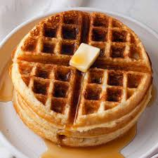

Recipe For Waffles:

Hi and Welcome!
This is where you will learn how to make waffles whenever you want
with whatever you want.This is generically speaking a guide in which
it explains step by step and detail by detail how to make fresh waffles!
List Of All Necessary Ingredients:
- 2 Cups of All-Purpose Flower
- 1 Teaspoon of Salt
- 4 Teaspoons of Baking Powder
- 2 Tablespoons of White Sugar
- 2 Eggs
- 1+1/2 Cups of Warm Milk
- 1/3 of Melted Cup Butter
- 1 Teaspoon of Vanilla Extract
List Of All Complete Details:
- Preparation Time: 10 Minutes
- Cook Time: 15 Minutes
- Total Time: 25 Minutes
- Servings: 5
- Yield: 10-12 Waffles
- Calories: 379
- Fat: 16g
- Carbs: 48g
- Protein: 10g
List Of All Necessary Steps:
- -Gather All Necessary Ingridients.
- -In a Large Bowl Mix Together Flour, Salt, Baking Powder and Sugar;
- -After Setting Them Aside Preheat the Waffle Iron to Desired Temperature.
- -In a Separate Bowl, Beat the Eggs.Stir in the Milk, Butter and Vanilla.
- -Pour the Milk Mixture into the Flour Mixture; Beat Until Blended.
- -Ladle the Batter into a Preheated Waffle Iron.
- -Cook the Waffles Until They Are Golden and Crisp.
- -Serve Emmidiately with Any Sauce You Want.
List Of All Complete Necessary Items:
- All Ingredients as Shown Above.
- Any Sauce You Would Like for The Waffles.
- Two Bowls for Mixing.
- A Waffle Iron.
- Necessary Cooking Tools for Mixing.
- Necessary Tools for Preparing a Dining Table For a Meal.